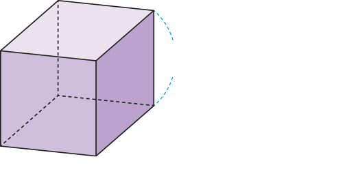
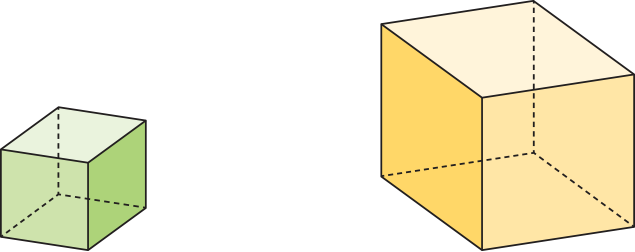

정육면체의 부피를 구하는 방법을 알아봅시다
물음 1
물음 2
직육면체의 부피를 구하는 방법을 이용하여 정육면체의 부피를 구해 보세요.

5 cm
가로, 세로를 모르는데
부피를 구할 수 있을까?
(정육면체의 부피)＝
5
×
5
×
5
＝
125
cm
3
‘한 모서리의 길이’로 정육면체의 부피를 구하는 방법을 써 보세요.

(정육면체의 부피)＝(한 모서리의 길이)
×(
한 모서리의 길이
)
×(
한 모서리의 길이
)